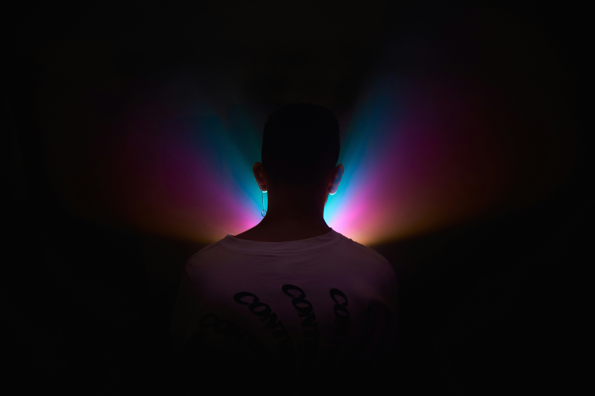

Harmony: Where movies & music sync!
Romantic Comedies:
10 Things I Hate About You (1999) → 505 – Arctic Monkeys
Clueless (1995) → Milkshake – Kelis
To All the Boys I’ve Loved Before (2018) → Crush Culture – Conan Gray
She’s The Man (2006) → Teenage Dirtbag – Wheatus
Dramas:

La La Land (2016) → Big Black Car – Gregory Alan Isakov
The Perks of Being a Wallflower (2012) → Pictures of You – The Cure
Twilight (2008) → Work Song – Hozier
Gone Girl (2014) → You Know I’m No Good – Amy Winehouse
Thrillers & Sci-fi:

Inception (2010) → Feels Like We Only Go Backwards – Tame Impala
Donnie Darko (2001) → The Perfect Girl – Mareux
Blade Runner 2049 (2017) → Vanished – Crystal Castles
The Substance (2024) → Bulletproof – La Roux
Action & Adventure:

Kill Bill (2003) → You Don’t Own Me – Lesley Gore
The Dark Knight (2008) → Sextape – Deftones
Avatar (2009) → The Songcord – Zoe Saldana
Dune: Part Two (2024) → Monolithic – Milord
Fantasy:

Harry Potter and the Prisoner of Azkaban (2004) → Runaway – Aurora
The Lord of the Rings: The Fellowship of the Ring (2001) → Caribbean Blue – Enya
Coraline (2009) → Little Dark Age – MGMT
Howl’s Moving Castle (2004) → Once Upon A Dream – Invadable Harmony
Horror:

Hereditary (2018) → Unfair – The Neighbourhood
Get Out (2017) → Run Rabbit Run – Flanagan & Allen
Midsommar (2019) → Choking on Flowers – Fox Academy
Pearl (2022) → Washing Machine Heart – Mitski
Animation:

Spider-Man: Into the Spider-Verse (2018) → Web – 070 Shake
Spirited Away (2001) → Miroirs: III. Une barque sur l’océan – Maurice Ravel
Ratatouille (2007) → Dolce Nonna – Wayne Jones
Corpse Bride (2005) → Lonesome Town – Ricky Nelson
Which movie/song duo will you “press play” next?